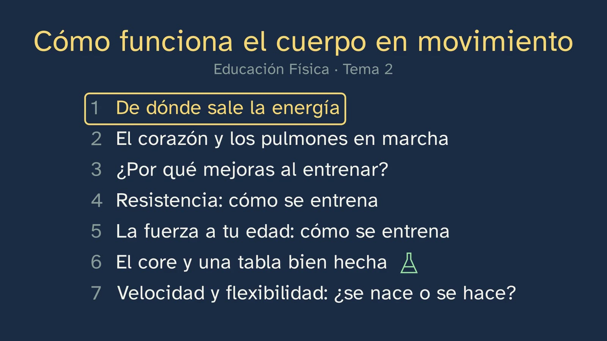
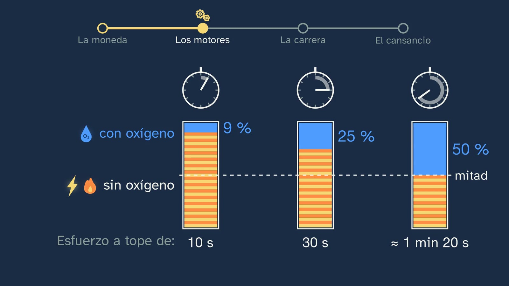
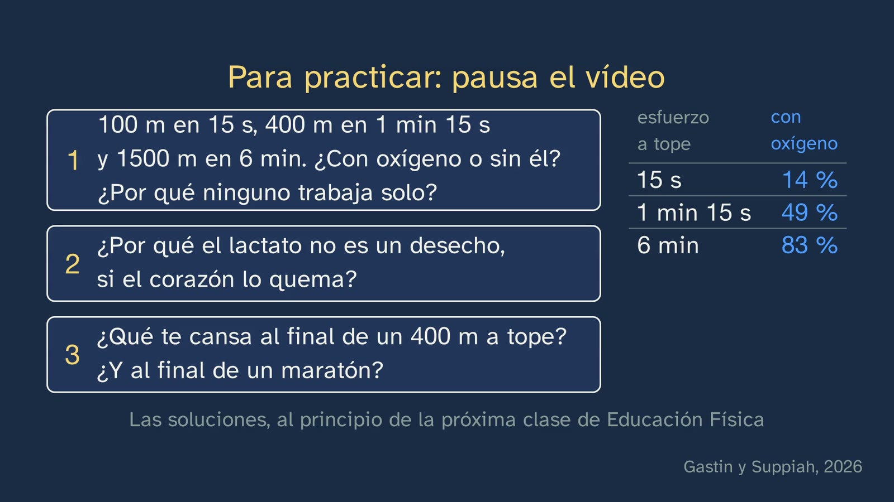

Where the energy comes from
In a nutshell
The class opens topic 2 with a question anyone has asked themselves while watching a race: why can't anyone run a marathon at the speed of a 100 metres? To answer it, the class looks inside the muscle: the coin it spends, the three engines that make it, which one leads depending on how long the effort lasts and how intense it is, and what tires you in a sprint and in a marathon. And it leaves two ideas that none of the textbooks and notes read when designing the topic brings: the three engines work at the same time, with numbers, and lactate is not the culprit behind fatigue.
The hook (2:02). London, 26 April 2026: Kenya's Sabastian Sawe runs the marathon in 1:59:30, the first sub-two-hour marathon to count as a world record (World Athletics, ratified on 23/07/2026). Every hundred metres in 17 seconds, 422 times in a row. Usain Bolt ran the 100 in 9.58 (Berlin, 2009): almost twice as fast (1.77 times; the channel's calculation).
The muscle's coin (2:56). Muscle spends only ATP; what you eat is used to make it. You carry between 50 and 80 g spread across all your muscles, depending on your body (about 5 mmol per kilo of muscle, Hargreaves and Spriet, 2020, in 21 to 33 kg of muscle, the averages for women and for men from Janssen et al., 2000; the channel's calculation: 53 to 84 g), which would be enough for a second and a half flat out (1.35 and 1.43 s with two estimates: Hargreaves and Spriet, 2020; Parolin et al., 1999). It is never used up entirely: across the muscle as a whole it doesn't drop much more than a third, because the muscle slows down first (Allen, Lamb and Westerblad, 2008). What nobody tells you: every day you make and spend something like your own body weight in ATP (Törnroth-Horsefield and Neutze, 2008). It isn't a store: it's a coin that circulates.
Three engines (4:12), the three energy systems in the notes. Phosphocreatine, immediate: it remakes ATP in a single step and, flat out, is almost used up in 10–15 s (Hargreaves and Spriet, 2020). How we know: since 1980 it has been possible to watch it fall and rise inside the muscle of a living person, without needles, with phosphorus magnetic resonance (Chance et al., 1980). With the open data of a person kicking gently inside the magnet (Dryad, CC0), it drops by a quarter in 42 s, phosphate rises as its mirror image and, on stopping, it comes almost all the way back in a couple of minutes. It recharges with oxygen: after a short effort, half of it in half a minute (Harris et al., 1976). Glycolysis, fast: it breaks down the glucose from glycogen without waiting for oxygen, with about three times the capacity of phosphocreatine (Hargreaves and Spriet, 2020); it gets little out of each glucose and makes lactate. The oxygen pathway, the aerobic one: in the mitochondria it burns carbohydrates and fats; it is the one that gives the least ATP per second, but it is on from the start and hardly runs out. An adult's fat stores hold 50,000 to 100,000 kcal, and all their glycogen, 1,200 to 3,400: 15 to 83 times less (Hargreaves and Spriet, 2020, fig. 2; the channel's calculation). And fat is burned from the start, not "only after 20 or 30 minutes" (6:24).
At the same time, not in turns (6:45). The relay race of many sets of notes, taken apart with the review by Gastin and Suppiah (2026; 102 studies, 311 measurements, CC BY 4.0): the three engines start at the same time from the first second, and what changes is how much each one puts in. In an all-out effort of 10 s, oxygen puts in almost 10% of all the energy (9%); in one of 30 s, 25%; and in one of a minute and 20 seconds, half (78.6 s in the review). The easier the effort, the sooner oxygen leads; walking, it puts in almost everything. Prediction: in an all-out 800 m of two and a half minutes, about two thirds with oxygen (67%, from table 5 of the review; the channel's calculation). And what almost nobody says: 78% of the groups measured are groups of men, and with women there is only a clue.
World records, an experiment (8:28). The average speed of the world records against how long each race lasts, from the 100 m to the marathon (World Athletics, accessed on 22/11/2026). Bolt, at almost 38 km/h in the 100, and the 200 almost matches it. From the 100 to the 800, which lasts 10.5 times longer, almost a quarter of the speed is lost (24%); from the 5000 to the marathon, which lasts 9.5 times longer, only another 11%. Sawe, at 21.2 km/h for two hours. First the class stops to think about why (9:12) and then comes the answer to the question in the title (9:26): on the left, the fast engines weigh most, giving a lot and lasting little; on the right, oxygen leads, and it hardly runs out. The women's curve has the same shape, at 89 to 92% of the men's speed in each race (the channel's calculation; Sandbakk et al., 2018, give a difference of "approximately 8-12%"). And it is not new: in 1925, Archibald Hill already saw that shape in the records of his time (Burnley et al., 2025).
What tires you (10:36). A line-up of suspects. In a sprint, the phosphate that phosphocreatine leaves behind as it is used up, and failures in calcium, the signal that makes the fibre contract (Westerblad, Allen and Lännergren, 2002; Allen et al., 2008). In a marathon, the glycogen in the muscles and liver running almost out: the wall. That they go together is certain; exactly why is still debated (Allen et al., 2008; Ørtenblad et al., 2013). With more than four million marathon records (Smyth, 2021): among those who had run more than one, 28% of men and 17% of women hit the wall, on average around kilometre 30; partly, according to the author, because of how they pace themselves.
Lactate, not guilty (12:10). From Fletcher and Hopkins's frog legs (Cambridge, 1907) came the idea of lactic acid as the cause of fatigue. With tracers, George Brooks (Berkeley; first in rats and, from the eighties, in people) saw that during exercise most of the lactate is burned as fuel (Mazzeo et al., 1986, in people: 87%); and in another study, the heart burned almost all the lactate it took up (Gertz et al., 1988). It is always being formed, even with plenty of oxygen; the liver makes glucose with it; and after an all-out effort it returns to its resting level in one or two hours. In rat fibres, a lot of lactate on its own barely takes away any strength (Posterino et al., 2001). In muscle, more than 99% is in the form of lactate, not lactic acid; where the burning feeling comes from is under debate; next-day muscle soreness (DOMS), in class 3.
Objective. By the end, students will know where their body gets the energy to move (ATP, and the three systems that make it, working at the same time), which one leads depending on how long the effort lasts and how intense it is, and why a sprint and a marathon tire you in different ways.
For readers outside Spain: the Bachillerato is the last two years of secondary school (ages 16–18); it follows ESO, the four years of compulsory secondary education (ages 12–16). Physical Education is a core subject, taken by every student in the first year of Bachillerato. The BOE is Spain's Official State Gazette, where every law and decree is published. Spain is divided into seventeen autonomous communities (regions), plus the autonomous cities of Ceuta and Melilla; each completes the national curriculum with its own, and this sheet mentions those of Andalusia, Castile and León and Galicia. The video is in Spanish, with English subtitles; the images on this sheet come from the video and keep their Spanish text. In Spain the decimal separator is a comma (9,58 means 9.58); this sheet uses a point. Spanish documents (the decrees) are quoted in our translation; English sources are quoted in the original.
Curriculum
Spain's Royal Decree 243/2022, Physical Education, a core subject in the first year of Bachillerato. Quotations checked in the lab's copy of the BOE's consolidated text (checked on 22/11/2026). Our translation of the official Spanish text.
| Element | What the decree says | Where the class works on it |
|---|---|---|
| Core knowledge (block C, problem solving in motor situations) | "Planning for the development of the basic physical capacities: strength and endurance. Training systems." | The basis of training systems: which engine leads depending on duration and intensity (4:12–10:28) |
| Introduction to the subject | "In the Bachillerato stage, the emphasis on mastery of the bodily domain will continue, going deeper into the technical and tactical components of its expressions, as well as into the factors that condition their proper performance." | The factors: where the energy comes from and what tires you (the whole class) |
| Specific competence 1 | "To internalise the development of an active and healthy lifestyle, planning their physical activity responsibly and consciously on the basis of personal self-assessment according to scientific and assessable parameters…" | The easier you go, the more oxygen puts in (7:30); a short rest gives you back your spark (5:03); what tires you in a sprint and in a marathon (10:36–11:53) |
| STEM2 descriptor (of CE1) | "… appreciating the importance of precision and truthfulness and showing a critical attitude towards the scope and limitations of the methods used." | The frogs of 1907 against the tracers (12:19–13:18); one person illustrates and does not prove (4:39); with women, a clue and not proof (8:07) |
| Criterion 1.1 | "To plan, design and put into practice autonomously a personal physical activity programme aimed at improving or maintaining health, applying the different systems for developing the physical capacities involved […], evaluating the results obtained." | The physiological reason behind each system: the split by duration (7:14) and exercise 1 |
The decree does not name energy. In the Physical Education section, the words «energía», «oxígeno» and «aeróbico» (energy, oxygen, aerobic) do not appear. This class is the basis for the "training systems" of core knowledge C: the "factors that condition their proper performance" of the introduction. The systems themselves come in classes 4 ("Endurance: how to train it") and 5 ("Strength at your age: how to train it").
What students need to bring. From ESO Physics and Chemistry, that energy is transformed and conserved (Royal Decree 217/2022). From class 4 of topic 1, "The apps that measure you", its three exercises, which are solved at the start. What they don't bring, said plainly: ESO doesn't name ATP, the mitochondrion or cellular respiration, either in the national decree or in the five regional ESO curricula read when designing the topic; the class starts from scratch. For anyone taking Applied Anatomy (an elective in Andalusia, Castile and León and Galicia), the class works as a review from the angle of movement.
How the class is built
Video chapters

| Part | What happens | Why this way |
|---|---|---|
| What you already know and the solutions | The map of the topic (0:05); can energy be created out of nothing? (0:21, short silence): no, it is transformed; the energy in the legs comes from what you eat, and part of it goes off as heat (0:31); the three solutions from "The apps that measure you", each with its exercise (0:48–2:02) | Retrieval (Roediger and Karpicke, 2006) of an idea from another subject that opens today's |
| Under two hours | Sawe in London, 2026, and Bolt in Berlin, 2009, on two straights (2:02–2:18); the question, to camera (2:36); the mission and the route: the coin, the engines, the race and fatigue (2:40) | The when, the where and the who before the intrigue; the question before the explanation |
| The muscle's coin | ATP letting go of a phosphate (2:56); how much sprinting does it give you? (3:18, prediction); a second and a half, and never all of it (3:33); your weight every day, a coin that circulates (3:53, silence to think) | Predict before seeing (White and Gunstone, 1992); what nobody tells you, with a fact that surprises |
| Three engines | The three energy systems, each with an icon and a colour that don't change throughout the class (4:12); phosphocreatine (4:22); how we know, with one person's magnetic resonance scan (4:39) and phosphate as a mirror image (5:03); glycolysis (5:26); the aerobic pathway, with the words from the notes (5:52); fat, from the start (6:24) | How do we know?, with real data that illustrate; the vocabulary of their notes, linked to the engines |
| At the same time, not in turns | The relay (6:45), crossed out (7:00); the split, in three bars (7:14); what the relay gets right, and the easier you go (7:30); the 800 m (7:51, prediction); two thirds, and who has been measured (8:07) | The mistake, in plain view (Muller et al., 2008), with the most recent review |
| World records, an experiment | The records, one by one (8:28); the 100 and the 200 (8:40); from the 5000 to the marathon (8:58); stop and think (9:12, 5 s); the answer, with the engines band (9:26); women (9:52); Hill, 1925 (10:01) | The answer to the title, with public data anyone can check; thinking before hearing the answer |
| Midpoint | Isidora: three engines at the same time; the longer it lasts, the more oxygen leads (10:28) | |
| What tires you | The line-up of suspects (10:36); the sprint (10:44); the marathon and the wall (11:05); men or women? (11:24, prediction); Smyth's study (11:37–11:53) | The suspects before the cause; what is under debate, said openly |
| Lactate, not guilty | The three signs: it tires you, it burns, it's waste (12:10); Fletcher and Hopkins (12:19); throw it away, store it or burn it? (12:40, prediction); Brooks and the tracers (12:54); each sign falls with its evidence (13:18); lactate and not acid, and the burning under debate (13:43) | The most deep-rooted mistake, taken apart sign by sign with the story of how it was found out (STEM2 descriptor) |
| Put it to the test, and practice | The stairs or marching on the spot (14:13) and the fist (14:51), with their opt-outs; the summary (15:33); three exercises (16:30); the open question (17:11); the next class (17:35) and the goodbye (17:49) | What is practical is offered as a suggestion, with its opt-out; the summary mentions everything |
Bridges with other subjects. Physics and Chemistry: energy that is transformed (and the part that goes off as heat), average speed in km/h. Biology: the cell and the mitochondrion; in year 2, cellular respiration and its pathways. Chemistry: acids and bases (at pH 7, there are about 1,380 lactate molecules for each one of lactic acid; the channel's calculation with its pKa, 3.86). Mathematics: speeds, ratios and percentages; reading and interpolating a table; an axis that stretches the seconds. History of science: Hill and his 1922 Nobel Prize, for the heat produced by muscle; the frogs of 1907.
A plan for a 50-minute lesson
Designed for the classroom with a projector or as a flipped class.
| Minutes | What is done |
|---|---|
| 0–3 | No video. "Before you start", on the worksheet: why does nobody run a marathon at the speed of a 100? Just for themselves. |
| 3–12 | Video up to the end of the three engines (0:00–6:45). Stop at the ATP prediction (3:18) and discuss it in pairs. |
| 12–20 | Video up to the midpoint (6:45–10:28). Stop at the stop and think on the curve (9:12): why does it fall fast and then flatten? |
| 20–30 | Video to the end (10:28–17:52). Stop at the lactate prediction (12:40). |
| 30–50 | The activity below, or the worksheet table "How much does oxygen put in?", the exercises in pairs and the open question as a debate. |
Typical mistakes and how they are handled
None has been measured with Spanish Bachillerato students: they are the ones that circulate in textbooks, notes, gyms and the press (topic sheet).
- "First phosphocreatine works; when it runs out, glycolysis; and then oxygen." The relay race (6:45). All three start at the same time, from the first second, and what changes is how much each one puts in (Gastin, 2001; Gastin and Suppiah, 2026). The relay gets more or less right which one leads depending on how long the effort lasts, although oxygen takes the lead sooner than is usually said; what's wrong is that they go one after another (7:30).

- "The oxygen engine is slow to start." It is on from the start; it is the one that gives the least ATP per second, not the one that arrives late (5:52). In an all-out effort of ten seconds it already puts in almost 10% of all the energy (7:14).
- "The percentages say what happens in that second." The 9, 25 and 50% are the split over a whole all-out effort lasting that long, not the split at that instant: each bar is a different effort (7:14). It is the mistake that slips in most easily when explaining it in class with a running clock.

- "Fat is only burned after 20 or 30 minutes." It is burned from the start, together with carbohydrates; what changes is where it comes from: the fat inside the muscle is used more at the start and, over time, more and more the fat the blood brings (6:24; Hargreaves and Spriet, 2020; Romijn et al., 1993).
- "When you sprint, you run out of ATP." Across the muscle as a whole it doesn't drop much more than a third: the muscle tires and slows down before it runs out (3:33).
- "Lactic acid tires you, burns and stays behind as waste." Each sign falls with its evidence: most of the lactate is burned as fuel, the heart burns almost all the lactate it takes up, the liver makes glucose with it, it returns to its resting level in one or two hours, and in lab fibres a lot of lactate on its own barely takes away any strength (12:54–13:18). The burning doesn't fall: where it comes from is debated (13:43).

- "Lactic acid gives you soreness." Not that either: the class says so (13:43) and leaves it for class 3, "Why do you improve when you train?".
- "What you eat moves the muscle." Carbohydrates and fats don't move the fibre directly: they are used to make ATP, which is the only thing the fibre spends (2:56).
Questions and solutions
Predictions, and stop and think (in the video)
- Energy: can it be created out of nothing? (0:21) No: it is neither created nor destroyed, only transformed. The energy that moves the legs comes from what you eat, and part of it goes off as heat: that's why you get hot when you run (most of the energy of metabolism comes out as heat: Hargreaves and Spriet, 2020).
- The ATP in your muscles right now: how much sprinting does it give you: one second, ten or a minute? (3:18) About a second and a half: the right option is "1 second" (1.35 and 1.43 s, with two estimates).
- With so little on you, your body weight every day? (3:53, silence to think) Yes: ATP isn't stored, it is spent and remade nonstop.
- An all-out 800 m in about two and a half minutes: how much of the energy comes from oxygen: a little, half or most? (7:51) Most: about two thirds (67%, interpolating table 5 of Gastin and Suppiah between 2 min, 62%, and 3 min, 72%; the channel's calculation).
- Stop and think: why does the records curve fall so fast at first, and then hardly drop? (9:12) On the left, in seconds, the fast engines weigh a lot, giving a lot but lasting little; on the right, oxygen leads, giving less per second but hardly running out. The "half and half" line, at around 1 min 20 s, falls between the 400 and the 800. That's why nobody runs a marathon at the speed of a 100.

- In mass-participation marathons, who hits the wall more: men or women? (11:24) Men: 28% of men and 17% of women, among those who had run more than one marathon (Smyth, 2021).
- During exercise, what does your body do with most of the lactate: throw it away, store it or burn it? (12:40) It burns it, as fuel.
The student worksheet: how much does oxygen put in? An all-out effort of 10 s: almost 10% with oxygen and 90% without it; the engines without oxygen lead. Of 30 s: 25% and 75%; also without oxygen. Of a minute and 20 seconds: half and half. An 800 m of two and a half minutes: about two thirds with oxygen and a third without it; oxygen leads. Walking: almost everything with oxygen. In none of them does a single engine work: all three are on from the first second. If you go easier, oxygen leads sooner (7:30). And the reason for the sprint and the marathon: the sprint is run with a lot from the fast engines, which give a lot of energy per second but don't last; the marathon, almost only with oxygen, which gives less per second but hardly runs out (9:26).
Practice (the solutions open the next Physical Education class)
- A girl your age runs the 100 m in 15 s, the 400 m in 1 min 15 s and the 1500 m in 6 min. With the table (15 s: 14% with oxygen; 1 min 15 s: 49%; 6 min: 83%), say in which race most of the energy comes without oxygen, in which with oxygen and in which about half and half; and why none of the three engines works alone. In the 100 m, most of it without oxygen: 100 − 14 = 86%. In the 1500 m, most of it with oxygen: 83% (without oxygen, 17%). In the 400 m, about half and half: 49% with oxygen and 51% without it. None works alone: even in the 15 s effort, oxygen puts in 14%, and even in the 6 min one, 17% comes without oxygen, because the three engines start at the same time. The first two figures are rows of table 5 in Gastin and Suppiah (2026); the 6 min one (82.6%) is interpolated between their 5 and 10 min rows (calculation run in
calculos.json). The girl's times follow the class's curve: in the 1500 she runs at 78% of her 400 speed, as in the records. Criteria: reading the table and working out the part without oxygen; saying "at the same time" with a figure that proves it (basis of criterion 1.1). A nuance for those who go further: the table comes from adults, almost all of them men; for a 16-year-old girl it is an approximation. The girl is an invented example. - Explain why lactate can't be a waste product, if the heart burns it. A waste product is of no use and has to be got rid of; lactate is used: the heart burned almost all the lactate it took up (Gertz et al., 1988), during exercise most of the lactate is burned as fuel (Brooks, with tracers), and the liver makes glucose with it. It is fuel and raw material. Criteria: the idea of fuel and at least one piece of evidence.
- Say what tires you at the end of an all-out 400 m, and what at the end of a marathon. At the end of a 400, phosphocreatine is almost used up and has left a lot of free phosphate in the fibre; that phosphate and failures in calcium are the main suspects: the fibre gets the order, but responds less well. At the end of a marathon, the glycogen in the muscles and liver, almost empty: the wall; that they go together is certain, exactly why is debated. Criteria: telling the two cases apart; not blaming lactate; talking about suspects and about debate where there is one, not about proven culprits.

Keep thinking. If lactate isn't to blame, why do you think that idea has survived since 1907, and still shows up in books and notes? And what other sports idea do you think could be in the same situation? It has no textbook answer, and the class gives no verdict (article 9 of the channel's Constitution). Leads for the debate:
- Because it had evidence, of the kind available in its day. Lactic acid really did multiply when the muscle tired (Fletcher and Hopkins, 1907); what the experiment didn't prove was that it was the cause. And it had the best science of the time behind it: the other half of the 1922 Nobel Prize that Hill received went to Otto Meyerhof, "for his discovery of the fixed relationship between the consumption of oxygen and the metabolism of lactic acid in the muscle" (Nobel Foundation). Gladden (2004) says the 1907 paper "ushered in the lactic acid era".
- Because changing what is known takes time. Brooks himself says that, when he was starting out, he too thought of lactate as a waste product that caused fatigue and pain (Brooks, 2020); the proof in people came with tracers, in the eighties, and since then it has had to make its way into books and notes.
- Because it's a good story, and here everyone's opinion has its place: a single culprit, with an acid's name, that seems to explain fatigue, the burning and the soreness all at once.
- To avoid exaggerating. Not everything surrounding the old idea is settled: where the acidity of effort comes from, and how much it weighs in fatigue, is still debated (Robergs et al., 2004, against Böning and Maassen, 2008). And measuring lactate in the blood is still useful for knowing how hard you are going (class 2 of the topic uses it for the threshold).
- On the second question: one tool for everyone to judge the idea they put forward is the class's own: what evidence is there? who measured it, and with how many people? do they go together, or does one cause the other? The class already takes apart another one (fat "only after 20 or 30 minutes"), and the topic will put more to the test: "no pain, no gain" (class 3) or "you have to stretch beforehand to avoid injury" (class 7).
A classroom activity
The three engines lab (30–40 min, in pairs; nothing is maximal, and nobody shows their data: each student notes their own on their sheet, and out loud they only say whether it went down or not):
- The curve, by hand (15 min). With the table below, each pair plots average speed against duration (on paper or in a spreadsheet, with time on a logarithmic scale or stretching the seconds, as in the video) and marks the "half and half" line, at around 1 min 20 s. Work out how much is lost from the 100 to the 800 and from the 5000 to the marathon (24% and 11% for men), and what percentage of the men's speed the women's is in each race (from 89 to 92%). For those who go further: the 1925 curve, as Hill did, with the progression of the records (in "Open resources").
- The fist, in stretches (10 min). Sitting, with the arm hanging down: open and close the fist, all the way and as fast as possible, for 30 s, without holding the breath; the partner counts each 10 s stretch with the stopwatch. Three minutes' rest and again. Does the count drop from one stretch to the next? Does it come back after the rest? If it doesn't drop, that's a result too: why might that be? (miscounting, not going flat out, changing the rhythm). There are no studies showing that it works for everyone, and that is why the video offers it "for the more hands-on".
- How long it takes to come down (10 min). One minute of marching on the spot at a brisk pace, lifting the knees well. On stopping, sitting down, the pulse as in class 2 of topic 1: fifteen seconds right at the end, times four, and again after a minute. Is it still high even though you're no longer moving? And the breathing? It's the extra oxygen the body uses to recharge phosphocreatine and replace what was spent.
The table for part 1. World Athletics world records, accessed on 22/11/2026; the speeds, the channel's calculation (calculos.json).
| Race | Men | km/h | Women | km/h |
|---|---|---|---|---|
| 100 m | 9.58 s | 37.6 | 10.49 s | 34.3 |
| 200 m | 19.19 s | 37.5 | 21.34 s | 33.7 |
| 400 m | 43.03 s | 33.5 | 47.60 s | 30.3 |
| 800 m | 1:40.91 | 28.5 | 1:53.28 | 25.4 |
| 1500 m | 3:26.00 | 26.2 | 3:48.68 | 23.6 |
| 5000 m | 12:35.36 | 23.8 | 13:58.06 | 21.5 |
| 10,000 m | 26:11.00 | 22.9 | 28:54.14 | 20.8 |
| Half marathon | 56:51 | 22.3 | 1:02:52 | 20.1 |
| Marathon | 1:59:30 | 21.2 | 2:09:56 | 19.5 |
With a leg injury, uncontrolled asthma or a heart problem, the marching is not done; with a hand, wrist or arm injury, or a heart or blood-pressure problem, the fist isn't either. Anyone who feels dizzy or notices that something isn't right stops and sits down; if it hurts or tingles a lot, they stop. Anyone who doesn't do a part counts or times their partner, and everyone does the curve.
Open resources: data and reading
- World records, World Athletics (free access), to redo the curve or add other races: https://worldathletics.org/records/by-category/world-records.
- The progression of the records since 1912: IAAF, Progression of IAAF World Records, 2015 edition (free PDF). With it you can draw the 1925 curve: https://iaaf-ebooks.s3.amazonaws.com/2015/Progression-of-IAAF-World-Records-2015/projet/IAAF-WRPB-2015.pdf.
- The review of the split, Gastin and Suppiah (2026, CC BY 4.0), with the table 5 that the class uses: https://doi.org/10.1007/s40279-026-02414-7.
- Hill and the records, Burnley et al. (2025, CC BY 4.0), with the curves of 1925 and of today: https://pmc.ncbi.nlm.nih.gov/articles/PMC11908475/.
- The phosphocreatine of a person in the magnet (Dryad, CC0): the height of the phosphocreatine and phosphate peaks, moment by moment, in three repetitions. For Mathematics, fitting the recovery to an exponential: https://doi.org/10.5061/dryad.08kprr59v. The paper that describes it, Rehman et al. (2024), Data in Brief: https://doi.org/10.1016/j.dib.2024.111114.
- The wall in four million marathons, Smyth (2021), PLoS One (CC BY 4.0). Its data come from the marathons' public websites, which its table S1 lists: https://doi.org/10.1371/journal.pone.0251513.
- The story of lactate told by the person who changed it, Brooks (2020), Journal of Sport and Health Science (CC BY-NC-ND): https://pmc.ncbi.nlm.nih.gov/articles/PMC7498672/.
- The frog paper, Fletcher and Hopkins (1907), Journal of Physiology, free to read: https://pmc.ncbi.nlm.nih.gov/articles/PMC1465827/.
- Glycogen, explained for coaches, Murray and Rosenbloom (2018), Nutrition Reviews, free to read: https://pmc.ncbi.nlm.nih.gov/articles/PMC6019055/.
- One person running at four speeds, from 3.5 to 9.5 m/s, measured on a lab track (Dorn, Schache and Pandy, 2012; SimTK, MIT licence), which is where the class's record runner and sprinter come from: https://simtk.org/home/runningspeeds. The paper, in Journal of Experimental Biology: https://doi.org/10.1242/jeb.064527.
Notes for teachers
- What comes from one person illustrates; it doesn't prove. The magnetic resonance scan (4:39) is of an untrained volunteer kicking gently, at 1 Hz for 42 s, at 5–10% of their maximum strength (Rehman et al., 2024). Of their three repetitions, the class shows the third, which drops by 26.5%. All three drop by 25.8 to 32.7%, recover half of what was lost in 25–30 s and, after two minutes, 94 to 97% (the channel's fit to the Dryad spreadsheet). That's why it only drops by a quarter: it isn't flat out; flat out, it is almost used up in 10–15 s (4:22). The general recharge figures come from studies with more people: half in 21–22 s (Harris et al., 1976), 18 to 28 s in the consensus by Meyerspeer et al. (2020), and fully in 60–120 s (Hargreaves and Spriet, 2020). For anyone who downloads the data: the constant in the README doesn't match the spreadsheet; it is better to fit it.
- The spectrum and the runner. The spectrum is redrawn with those data: the height of the phosphocreatine and phosphate peaks comes from the spreadsheet, and the ATP peak is schematic; the caption says so. The record runner and the sprinter move with the measured running of one and the same person on a lab track (Dorn, Schache and Pandy, 2012): at 5.2 m/s (18.7 km/h; the record pace is 21.2 km/h) and sprinting, at 9.4 m/s (34 km/h; Bolt's, on average, 37.6 km/h). They run on the spot at their own stride: they are not Sawe or Bolt, nor do they look like anyone. Each record's speed is carried by the marker that travels along its straight.
- What is a diagram is called a diagram. The three engine icons, the shortening fibre, the mitochondrion, the ATP store, the line-up of suspects and the colour band under the records curve (9:26), which follows the split-by-duration table, not what happened in each record. The 1907 set-up is a drawing, and is labelled «(dibujo)» ("drawing"): it is not an image from the period.
- The figures that lend themselves to confusion.
- The split (7:14): a whole all-out effort of that duration (mistake 3). Second by second, oxygen starts providing most of the energy much earlier: between 15 and 30 s in highly trained 400 to 1500 m athletes, with few athletes (Spencer and Gastin, 2001). The 2026 review is of adults: 78% of the groups are men; 12%, women; and 11%, mixed (they add up to 101 because of the review's own rounding). "Half and half" is at 78.6 s in its abstract; with its table 5, it comes out at 78 s.
- ATP: the 50–80 g are only those in the muscles, between the average for an adult woman (21 kg of muscle) and that for a man (33 kg), at about 5 mmol per kilo (Janssen et al., 2000; Hargreaves and Spriet, 2020). "Your weight every day" is the ATP of the whole body, and it is an order of magnitude. Don't divide one figure by the other to get how many times each molecule is recycled: it would mix the whole body with the muscle.
- "It never drops much more than a third" is across the muscle as a whole: at the end of a 400 m, 27% (Hirvonen et al., 1992, six runners); in a maximal effort, from about 8 to about 5 mmol/kg (Baker et al., 2010). In individual fast fibres it can drop more (68–71% in Karatzaferi et al., 2001, with two people: it is only an example).
- The records change: these are the ones of 22/11/2026. The speeds are the channel's: 37.58 km/h in the 100 m and 37.52 in the 200 m; from the 100 to the 800, 10.53 times the time and 76.0% of the speed; from the 5000 to the marathon, 9.49 times and 88.9%.
- The 1925 curve (10:01) is drawn with the men's running records in force on 31/12/1925, each with two sources. Three nuances: the 200 m is the 220 yards on a straight (20.8 s, Paddock, 1921), the one today's lists count; the 400 m is Liddell's 47.6 (1924), a record then and erased later, although Meredith's 47.4 over 440 yards (1916) was faster; and the marathon isn't drawn: it wasn't a record event (marathon records have been official since 2004), and the best mark of 1925 (Michelsen, 2:29:01.8) was run on a course that the ARRS classifies among those from 40 km to 25 miles, so its point would come out high. The 1925 curve ends at the 10,000 m.
- Hill already looked at women. As well as running, swimming, cycling and rowing, he plotted women's running records, up to about 200 s (1,000 yards), and swimming records, and saw that they were similar in shape to the men's (Burnley et al., 2025). His sentence, "attaining practically a constant value after about 12 min" (Hill, 1925, p. 421), is read in that review: it has not been possible to open the 1925 original. His Nobel is the 1922 one, awarded in 1923: the class says "the 1922 Nobel Prize".
- Smyth's wall (11:37) is a definition: going at least 25% slower than your own average pace from km 5 to 20, for 5 km or more, after km 20. They are recreational runners, not elite. The 28 and 17% are of those who ran more than one marathon (1.93 million records); with all the records, 34% hit it. The slowdown starts, on average, at km 29.6 for men and at 29.3 for women. The author attributes it partly to pacing and to risk-taking, and says the wall has many causes: training, fitness, pacing, nutrition and the conditions on the day.
- With women, a clue. That oxygen puts in a little more in women comes from small studies, of two to five women per race: in the 800 m, 70% with oxygen in women and 60% in men; in the 1500 m, 86 and 77% (Duffield et al., 2005); and in another study, in the 800 m, 33% without oxygen in women and 39% in men (D. W. Hill, 1999). The class presents it as a clue, not as proof, and that is how it is best treated.
- Lactate "on its own". The evidence that it barely takes away any strength is from rat fibres in the lab: with 20 mM of lactate, maximum force drops by 4-5% (Posterino and Fryer, 2000), and with 30 mM the response doesn't change (Posterino et al., 2001, mammalian fibres); the voice and the caption say "rat". "On its own" deliberately leaves out acidity, which is another question and is still debated (Robergs et al., 2004, against Böning and Maassen, 2008, and Lindinger and Heigenhauser, 2008). In the fatigue of intense efforts, Westerblad, Allen and Lännergren (2002) see phosphate, more than acidity, as the most important cause. And the burning seems to come from several substances together: protons, lactate and ATP together give a sensation of fatigue and pain, and separately they don't (Pollak et al., 2014, read only in its abstract).
- What is deduction. "Walking, it puts in almost everything" (7:30) is deduced from the fact that, in efforts of minutes to hours, oxygen provides almost all the ATP (Hargreaves and Spriet, 2020); no study in the class measures walking. And that lactate returns to its resting level "in one or two hours" is deduced from its half-life after an all-out effort (21.5 min sitting and 15.7 in active recovery, in ten athletes: Gupta et al., 1996) and from the fact that it stays high for more than an hour (Goodwin et al., 2007).
- Studies with few people serve as examples. The heart that burns almost all the lactate it takes up is a study with nine men (Gertz et al., 1988); in people, most of the lactate is burned during exercise: from 49% at rest to 87% (Mazzeo et al., 1986).
- Put it to the test. The stairs are the test that works for everyone; the fist goes "for the more hands-on", because there are no studies showing that it works for everyone. What stays high after the stairs is the extra oxygen after exercise, with a fast part and a slow part (Børsheim and Bahr, 2003); recharging phosphocreatine is one part of what it pays for.
- Where each mistake circulates. The relay and the lactic acid that tires you appear in textbooks and in department notes; fat "only after 30 minutes", in the press and on websites (La Nación, 14/07/2024, debunks it). It is what students may have read, not a criticism of whoever wrote it.
What the class leaves out, and why
- Yields and pathways (the "38 ATP", the Krebs cycle, glycolysis step by step): they belong to Biology in year 2, and the topic doesn't cover them. The board draws three ATP from glycolysis, without a number.
- The heart, the lungs and the ceiling of the endurance engine: what limits maximal oxygen uptake, the threshold, and how much oxygen running Sawe's marathon demands compared with a 16–17-year-old boy or girl. They go in class 2 of the topic, "Heart and lungs at work", which the end of the video announces.
- Soreness: in class 3, "Why do you improve when you train?" (13:43).
- How each engine is trained: continuous and interval systems and high-intensity interval training, in class 4, "Endurance: how to train it"; strength, in class 5, "Strength at your age: how to train it".
- Intensity zones (Karvonen, perceived exertion, FITT): in topic 3, class 2, "FITT: the four questions of a programme".
- What to eat in order to move, and energy balance: in topic 4, class 1, "Eating to move".
- Supplements, including creatine, which more than one student will link with phosphocreatine: they don't belong to this topic; if a myth calls for it, in topic 4, class 6, "Fitness myths: how do we know?".
- The acidity of effort, in detail: it is a specialists' debate; the class only says that where the burning comes from is debated.
Sources
Curriculum
- Royal Decree 243/2022, annex II, Physical Education, consolidated text (BOE, in Spanish): https://www.boe.es/buscar/act.php?id=BOE-A-2022-5521.
- Royal Decree 217/2022 (ESO), Physics and Chemistry (BOE, in Spanish): https://www.boe.es/buscar/act.php?id=BOE-A-2022-4975.
The hook and the records
- World Athletics, world records database (22/11/2026): https://worldathletics.org/records/by-category/world-records; report on Sawe's record (26/04/2026): https://worldathletics.org/news/report/sawe-two-hour-assefa-world-record-london-marathon; ratifications of 23/07/2026 and 09/11/2026.
- Bolt's 200 m splits in Berlin (2009): Track & Field News; O. Helene and M. T. Yamashita, "The force, power and energy of the 100 meter sprint", arXiv:0911.1952.
- Sandbakk, Ø., Solli, G. S. and Holmberg, H.-C. (2018). Sex differences in world-record performance. International Journal of Sports Physiology and Performance, 13, 2–8.
- Hill, A. V. (1925). The physiological basis of athletic records. The Scientific Monthly, 21, 409–428, read in Burnley, M., Vanhatalo, A., Poole, D. C. and Jones, A. M. (2025). Journal of Physiology, 603(6), 1361–1374 (CC BY 4.0).
- Records of 1925: IAAF, Progression of IAAF World Records (2015); S. Müller, "Athletics - Progression of world records" (06/10/2026); ARRS, track and road progressions.
- Nobel Foundation, the 1922 Nobel Prize in Physiology or Medicine (A. V. Hill and O. Meyerhof): https://www.nobelprize.org/prizes/medicine/1922/summary/; Meyerhof's prize motivation: https://www.nobelprize.org/prizes/medicine/1922/meyerhof/facts/.
ATP and the three engines
- Hargreaves, M. and Spriet, L. L. (2020). Skeletal muscle energy metabolism during exercise. Nature Metabolism, 2, 817–828.
- Parolin, M. L. et al. (1999). American Journal of Physiology, 277, E890–E900. Janssen, I. et al. (2000). Journal of Applied Physiology, 89(1), 81–88.
- Baker, J. S., McCormick, M. C. and Robergs, R. A. (2010). Journal of Nutrition and Metabolism, 905612. Karatzaferi, C. et al. (2001). Experimental Physiology, 86(3), 411–415. Hirvonen, J. et al. (1992). Canadian Journal of Sport Sciences, 17(2), 141–144.
- Allen, D. G., Lamb, G. D. and Westerblad, H. (2008). Skeletal muscle fatigue: cellular mechanisms. Physiological Reviews, 88, 287–332.
- Törnroth-Horsefield, S. and Neutze, R. (2008). PNAS, 105(50), 19565–19566; BioNumbers, BNID 105606.
- Chance, B., Eleff, S. and Leigh, J. S. (1980). PNAS, 77, 7430–7434. Dryad data, doi:10.5061/dryad.08kprr59v (CC0); Rehman, U. et al. (2024). Data in Brief, 57, 111114. Meyerspeer, M. et al. (2020). NMR in Biomedicine, 34, e4246. Harris, R. C. et al. (1976). Pflügers Archiv, 367, 137–142.
- Murray, B. and Rosenbloom, C. (2018). Nutrition Reviews, 76(4), 243–259. Romijn, J. A. et al. (1993). American Journal of Physiology, 265(3), E380–E391. E. Filho (O Globo/GDA), La Nación, 14/07/2024.
At the same time, not in turns
- Gastin, P. B. (2001). Energy system interaction and relative contribution during maximal exercise. Sports Medicine, 31(10), 725–741.
- Gastin, P. B. and Suppiah, H. T. (2026). Anaerobic and aerobic energy system contribution during maximal exercise: a systematic review. Sports Medicine, doi:10.1007/s40279-026-02414-7 (CC BY 4.0).
- Spencer, M. R. and Gastin, P. B. (2001). Medicine and Science in Sports and Exercise, 33(1), 157–162. Duffield, R., Dawson, B. and Goodman, C. (2004 and 2005). Journal of Science and Medicine in Sport, 7, 302; Journal of Sports Sciences, 23, 299 and 993. Hill, D. W. (1999), a different Hill. Journal of Sports Sciences, 17(6), 477–483.
What tires you
- Westerblad, H., Allen, D. G. and Lännergren, J. (2002). News in Physiological Sciences, 17, 17–21.
- Bergström, J. et al. (1967). Acta Physiologica Scandinavica, 71, 140–150. Ørtenblad, N., Westerblad, H. and Nielsen, J. (2013). Journal of Physiology, 591, 4405–4413.
- Smyth, B. (2021). How recreational marathon runners hit the wall. PLoS One, 16(5), e0251513 (CC BY 4.0).
Lactate
- Fletcher, W. M. and Hopkins, F. G. (1907). Lactic acid in amphibian muscle. Journal of Physiology, 35, 247–309.
- Brooks, G. A. (2018). Cell Metabolism, 27(4), 757–785; (2020), Journal of Sport and Health Science, 9(5), 446–460. Brooks, G. A. and Gaesser, G. A. (1980). Journal of Applied Physiology, 49(6), 1057–1069. Mazzeo, R. S. et al. (1986). Journal of Applied Physiology, 60(1), 232–241. Gertz, E. W. et al. (1988). Journal of Clinical Investigation, 82(6), 2017–2025.
- Gladden, L. B. (2004). Lactate metabolism: a new paradigm for the third millennium. Journal of Physiology, 558, 5–30. Goodwin, M. L. et al. (2007). Journal of Diabetes Science and Technology, 1, 558–569. Gupta, S. et al. (1996). International Journal of Sports Medicine, 17(2), 106–110.
- Posterino, G. S. and Fryer, M. W. (2000). Journal of Applied Physiology, 89(2), 517–528. Posterino, G. S., Dutka, T. L. and Lamb, G. D. (2001). Pflügers Archiv, 442(2), 197–203. Cairns, S. P. and Lindinger, M. I. (2025). European Journal of Applied Physiology.
- Robergs, R. A., Ghiasvand, F. and Parker, D. (2004). American Journal of Physiology, 287, R502–R516; and the debate with Böning and Maassen and with Lindinger and Heigenhauser (2008), Journal of Applied Physiology, 105, 358–361. Pollak, K. A. et al. (2014). Experimental Physiology, 99(2), 368–380. Schwane, R. A. et al. (1983). The Physician and Sportsmedicine, 11(3), 124–131.
Put it to the test
- Børsheim, E. and Bahr, R. (2003). Effect of exercise intensity, duration and mode on post-exercise oxygen consumption. Sports Medicine, 33(14), 1037–1060.
Solutions from the previous class
- Apple, «Monitorizar la frecuencia cardiaca con el Apple Watch»; S. Prahl, "Tabulated molar extinction coefficient for hemoglobin in water", OMLC; Android Help, «Cambiar los permisos de aplicaciones en tu teléfono Android».
Movement, images and illustrations
- Motion capture: Dorn, T. W., Schache, A. G. and Pandy, M. G. (2012). Muscular strategy shift in human running: dependence of running speed on hip and ankle muscle performance. Journal of Experimental Biology, 215(11), 1944–1956 (doi:10.1242/jeb.064527); data from runner JA1 at 5.2 and at 9.4 m/s, "Running Data and Models", SimTK, © 2012 Stanford University, MIT licence; bodies from MakeHuman (CC0); "grey shorts", by KuraiWolf (MakeHuman community, CC BY).
- Portrait of A. V. Hill, years later: Wellcome Collection, V0026552, CC BY 4.0.
- Illustrations: OpenAI image generation, in Isidora's style.
About this class
Script written by an AI (Claude, by Anthropic), with an independent review and every fact checked in two sources or in the original; reviewed by a person before publishing. Isidora is an illustrated character and her voice is synthetic (Microsoft Azure AI Speech): it does not imitate any known person. This English version was translated by the same AI and reviewed by a person.
How to cite this sheet
GinCol Lab (2026). Where the energy comes from. GinCol Lab teacher sheet: Physical Education · 1st year of Bachillerato · Topic 2: How the body works in motion · Class 1 of 7. https://gincollab.github.io/aula/en/educacion-fisica/t02-c1/. CC BY 4.0.
GinCol Lab teacher sheet · CC BY 4.0 · Source and errata